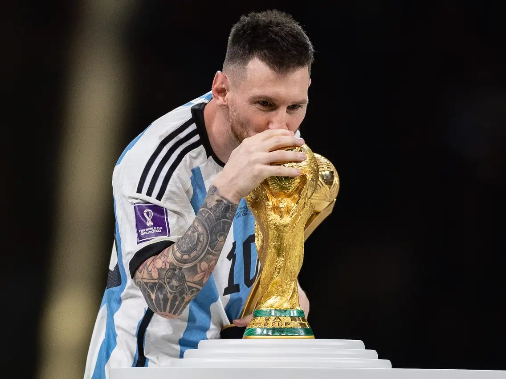

Santiago
Lionel Messi is often considered one of the greatest football (soccer) players in the history of the sport for several compelling reasons. While the title of "greatest player" is subjective and can vary from person to person, here are some arguments in favor of Messi's claim to this title:
Rodrigo Nascimento
I think Pele is better than Messi not only because i'm Brazilian, but because
Pelé have played in a time were technologie in football were not used and at that time
players had more dificulties to play the game. For example they had to use shirts that's been much more
heavier than the shirts players use now mainly when it's rainning. Besides Pele did won 3 World Cups. Despite Messi is the greater player at the moment
Pelé still is the best.